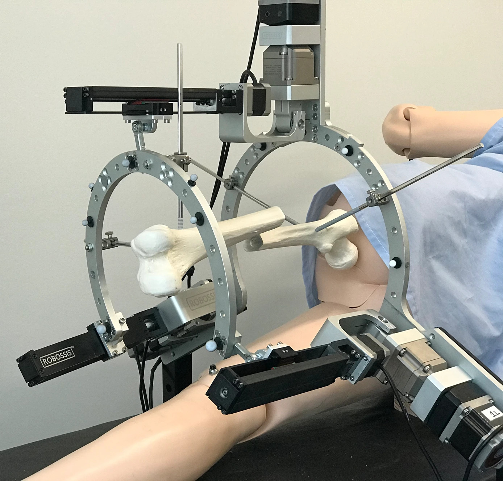

Fawaz Mallick
BS in Biomedical Engineering (Expected 2024)
Rowan University
GPA: 3.56 (Cum Laude)


BS in Biomedical Engineering (Expected 2024)
Rowan University
GPA: 3.56 (Cum Laude)
Research Associate under Dr. Mohammed Abedin Nasab (May 2023 - May 2024)
Research Associate under Dr. Mitja Trkov (August 2024 - Present)
Carnegie Mellon University's renowned robotics program aligns perfectly with my research interests and career goals. The intersection of mechanical engineering and robotics at CMU provides the ideal environment for: